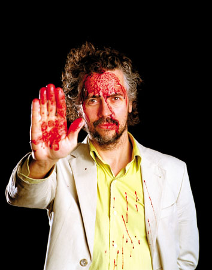
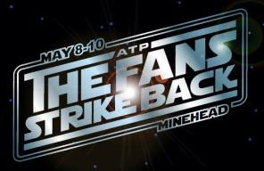

The News, Digested (09.03.2009)
There must be something in the water this week. We expect Kanye West to go around shouting his mouth off, dissing other artists, but Wayne Coyne? Bono? Miley Cyrus?! We expected better from these people. Also: Festivals! Free Music! Weird Japanese Gadgets!
. . .
WAYNE COYNE VS. ARCADE FIRE
By David Coleman
Not content to hop aboard the anti-Radiohead bandwagon -- which is admittedly looking a touch crowded these days, with Robert Smith, Kanye West and Miley Cyrus all taking their places in recent weeks -- Flaming Lips frontman Wayne Coyne dramatically struck out at the Arcade Fire in an interview with Rolling Stone last week.
The conclusion of Coyne's rant? "They have good tunes, but they're pricks, so fuck 'em."
Needless to say, Win Butler was not impressed:
"I can't imagine a reason why we would have been pompous towards the Flaming Lips, a band we have always loved, on that particular night, all those years ago. Unless I was way more jet-lagged then I remember, I hope I was less of a 'prick' than telling Rolling Stone that a bunch of people I don't know at all are really a bunch of assholes."
I didn't love Neon Bible, but as far as comebacks go I have to give Win some credit there.
Coyne wasn't the only experienced rock star type to shed his nice guy persona this week. The venerable Bono branded Coldplay's Chris Martin "a completely dysfunctional character and a cretin" in an interview on Radio 1. He then completely lost my respect by adding "but he happens to be a great melodist".
Next week: James Blunt slates 'one trick ponies' Animal Collective.
. . .
FESTIVAL FEVER:
By David Coleman
With thousands of festival promoters all vying for your debit card number, it's sometimes difficult to know which one to go with. I don't have magic answers, but these events have certainly caught my eye in the past week:
All Tomorrow's Parties (http://www.atpfestival.com)
ATP is offering up two festivals in the UK this summer. The Fans Strike Back features Devo, The Jesus Lizard and Young Marble Giants and takes place 8-10 May. The following weekend, which is curated by The Breeders, boasts an equally impressive line-up including Gang Of Four, Shellac, X, Throwing Muses, Deerhunter and, you guessed it, The Breeders.
Fuse Leeds 09 (http://www.fuseleeds.org.uk)
The Leaf Label has one of the most enviable rosters in the business and a handful of its leading lights have signed up to appear at this Leeds-based music festival. Danish post-rockers Efterklang will perform the acclaimed 2007 album Parades in its entirety on 25 April, ably supported by the Britten Sinfonia. Colleen, A Hawk And A Hacksaw and Nancy Elizabeth are also set to appear.
Pitchfork Music Festival (http://www.pitchforkmusicfestival.com)
The Jesus Lizard. Built To Spill. Yo La Tengo. The National. Grizzly Bear. The biggest and arguably most influential indie music site on the Internet just announced the first batch of performers for its annual festival in Union Park, Chicago, and it's looking pretty tempting. The three day bash begins on 17 July and tickets go on sale 13 March.
. . .
INSOUND.COM TURNS TEN
By David Coleman
Insound.com is celebrating its tenth birthday this month by offering all shoppers a 10% discount on items bought in the month of March. The code is bday10.
. . .
FREE MUSIC AS EARLY AS 2011, SAYS MUSIC INDUSTRY
By Miguel Morelli
With the music industry constantly harassing music services and individuals for copyright infringement, and the growing availability of free music online, you might ask: what’s wrong with them? Are the major labels blind to the changing times? Well no, they aren’t. They know that recorded music sales, streamed or downloaded, will continue to drop until they reach zero, reports Techcrunch.
They also consider that recorded music will eventually be reduced to the status of promotional material, released for free to spread the word about new bands and artists, and live performances. Evidently, it’s all part of a master plan, because most major labels have already struck “360 music deals” with artists, which give the labels a share of the revenue from fan sites, concerts, merchandise, endorsement deals. So they’re covering all the angles as music becomes free.
The music industry won’t stop suing customers, because “the spreadsheets and financial models dictate that suing customers and partners just makes too much sense”. Apple still pays the labels for download sales, and sites like MySpace Music, Imeem, Rhapsody and Last.fm pay streaming fees. This will be likely to continue until at least 2011.
Will ticket prices skyrocket after file-sharers get off the hook? What is going to happen to the quality of music recordings, as they become “marketing collateral”? [Techcrunch]
. . .
JAPANESE GADGET CONTROLS IPOD WITH FACIAL EXPRESSIONS
By Miguel Morelli
A new Japanese gadget called the "Mimi Switch" or "Ear Switch" measures tiny movements inside the ear that result from different facial expressions, and transforms them into commands that are transmitted to devices like the iPod.
"An iPod can start or stop music when the wearer sticks his tongue out, like in the famous Einstein picture,” inventor Kazuhiro Taniguchi of Osaka University told AFP. “If he opens his eyes wide, the machine skips to the next tune. A wink with the right eye makes it go back.”
Furthermore, the Mimi Switch examines your natural movements and stores data, essentially getting to know its user. "If it judges that you aren't smiling enough, it may play a cheerful song," says Taniguchi.
The device would also aid the disabled in alerting medical services or controlling everyday appliances like cameras, computers and air conditioners, all done hands-free. It can even monitor if you’re sneezing too often, or if you’re eating well, and can send messages to warn your mother! The Mimi switch should be available in two to three years. [Physorg]